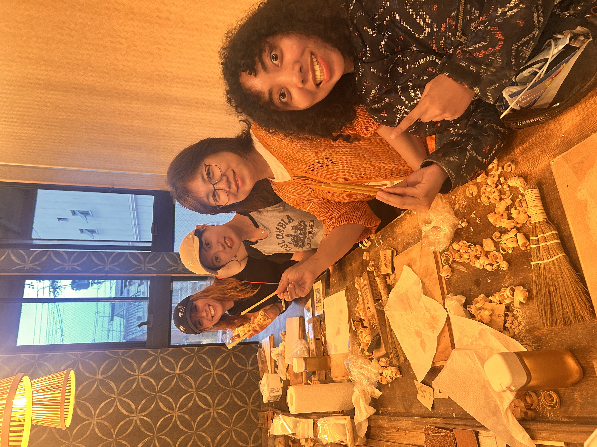
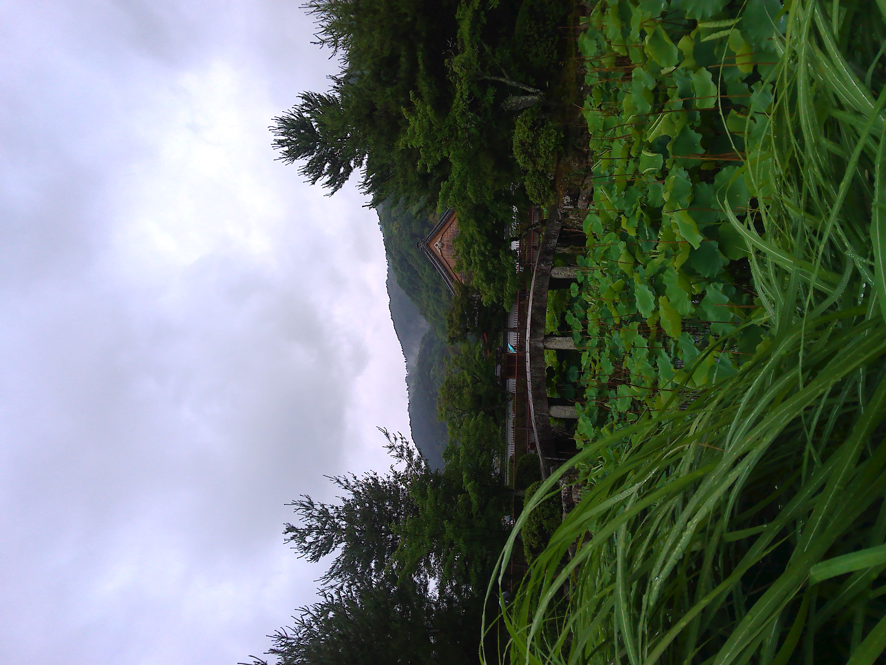
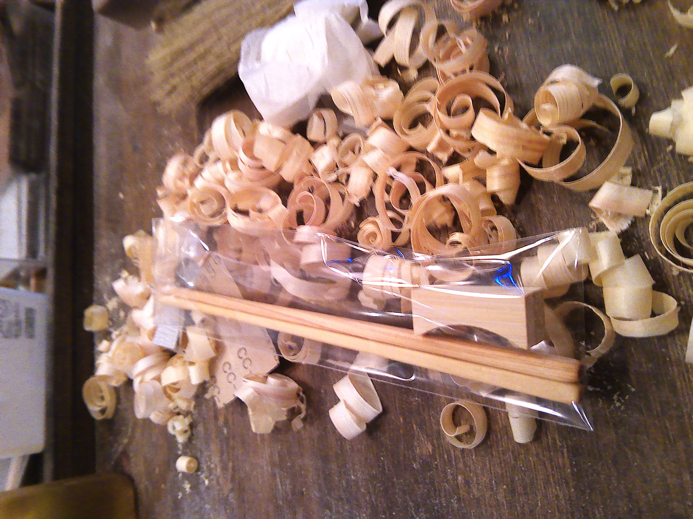
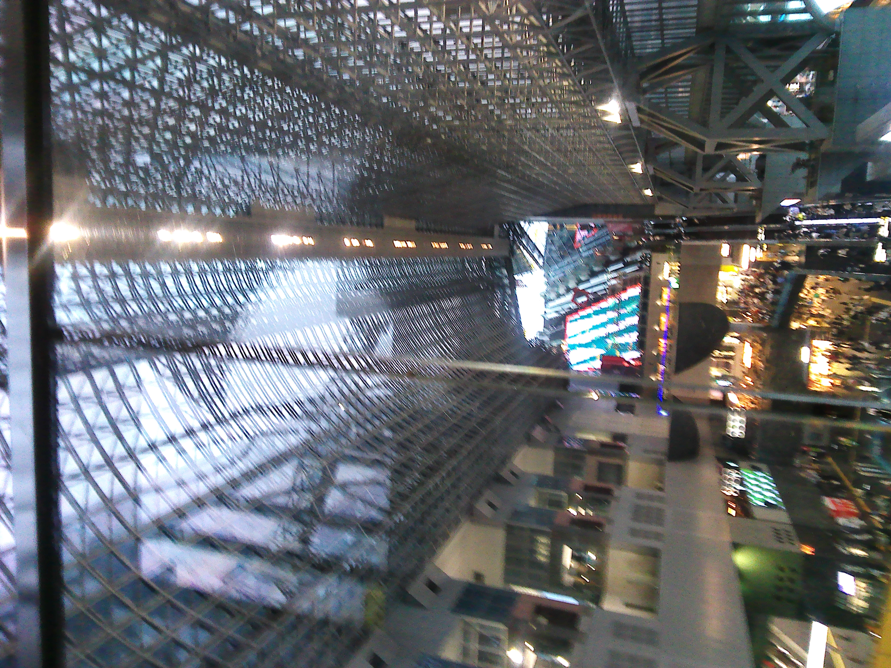
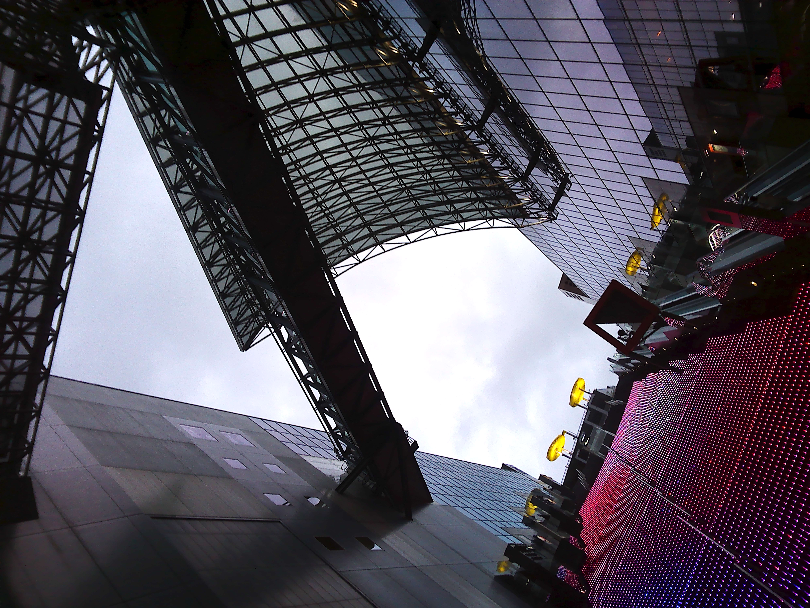
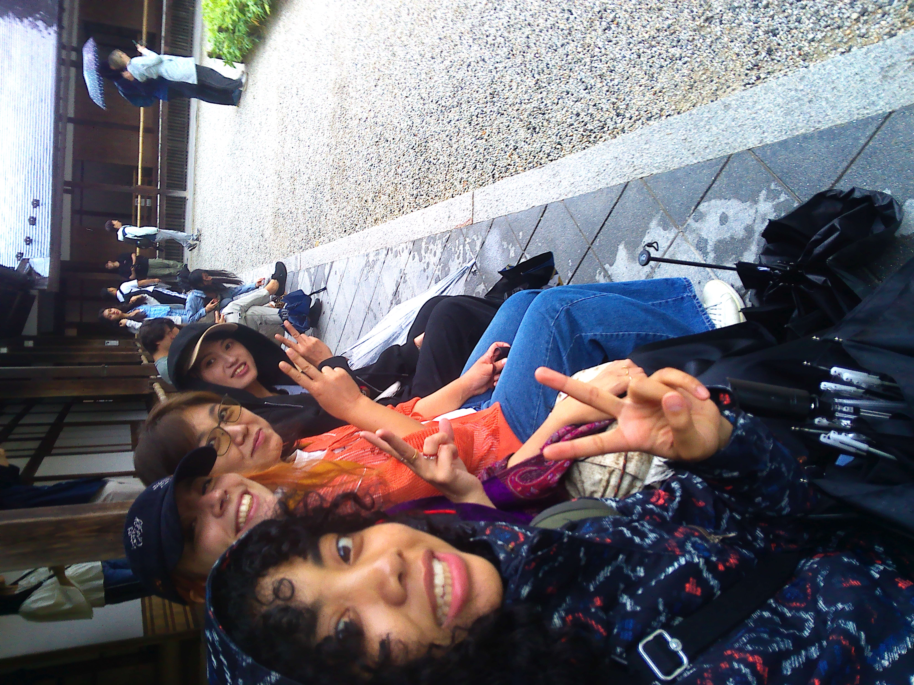
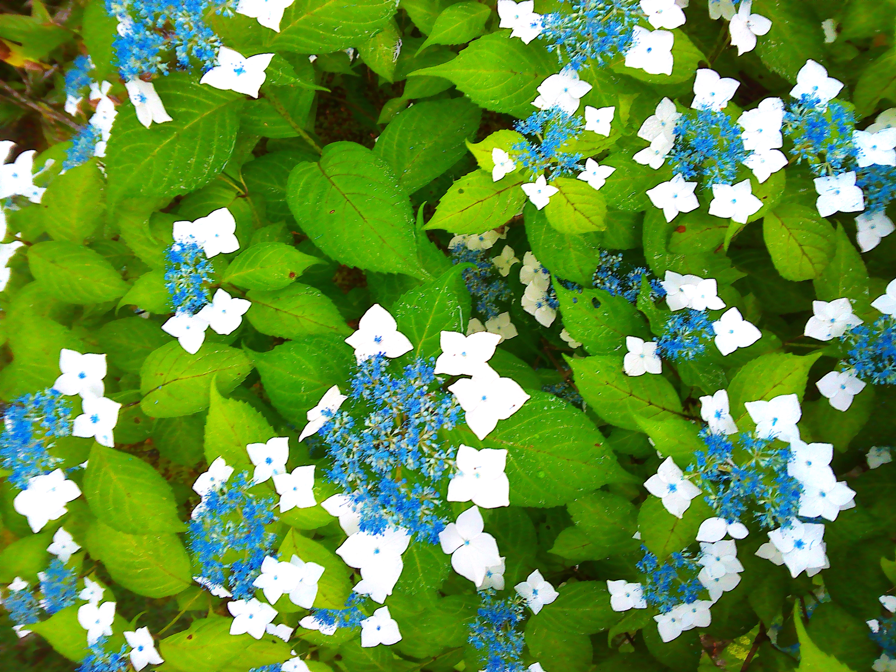
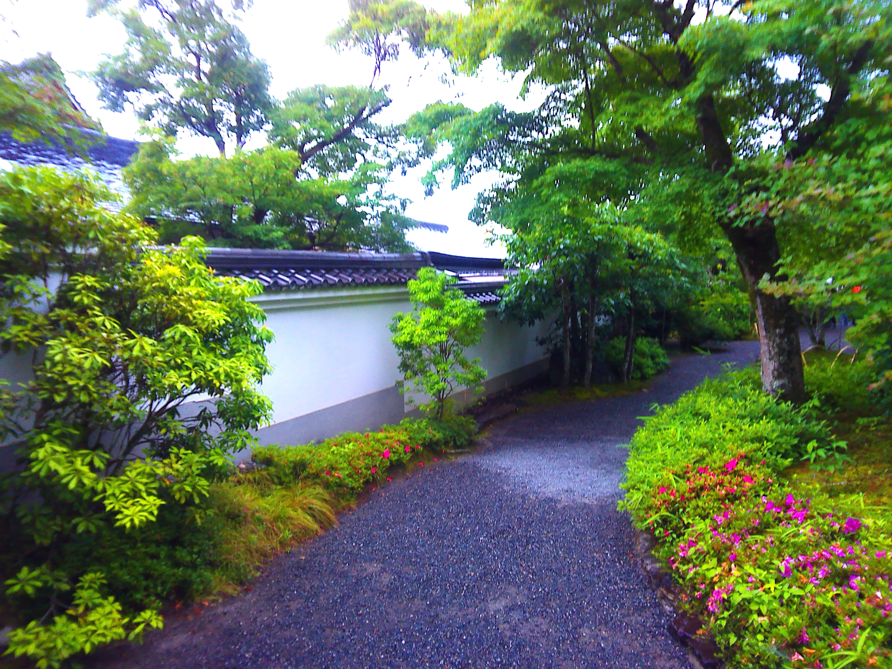
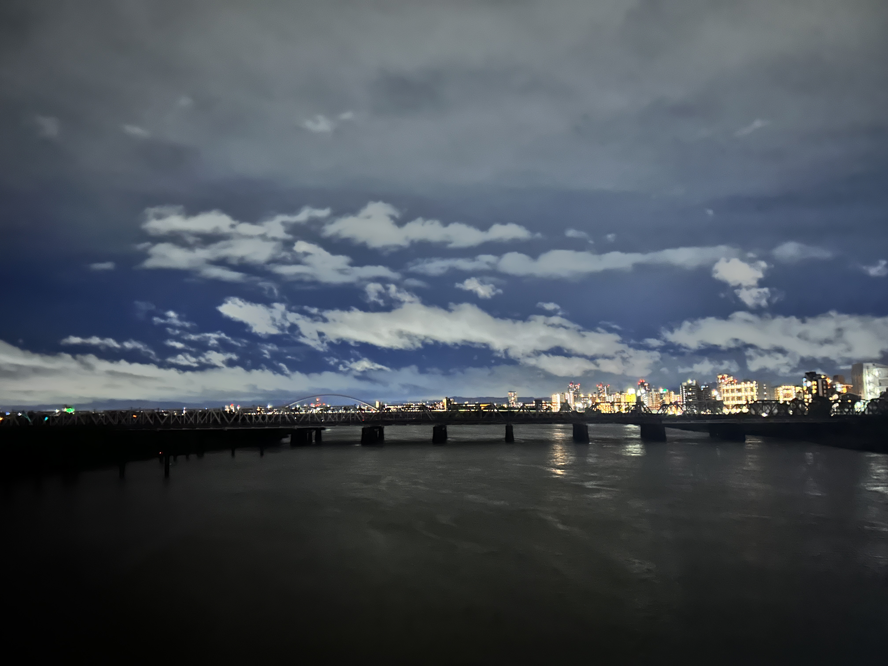

KYOTO AGAIN!
2026.06.07
Dear blog. I went to Kyoto today with my schoolmate tomodachi’s. it was very fun
Today.
Today, the events of the day went as the following:
- Woke up at 6am
- Ate breakfast (3 small bananas + yogurt)
- Rushed to 新大阪駅 to meet w/ Hanni-san
- Hopped on the JR, met with Jessica-san, Arui-san, Braven-san, and Ella-san on the train. It was funny because we were technically in wrong car, but this train was only two cars long and it took like 10 minutes to get to the place. The ticket keeper told us we had to move though.
- Walked around some bamboo forest
- Walked around a 花にわ, took some picks
- Went into the black dragon temple where an old man explained to me the illusion of the black dragon’s eye. Basically, there was this huge painting of a black dragon on the ceiling of the temple and the eye seemed to follow you wherever you went. You couldn’t take photos there. I would show otherwise.
- Did some shopping. Built a cute charm for my camera.
- Went to go eat at some cafeteria. Got shrimp tempura udon. It was okay.
- Took the train to some other place
- Went to a cute little cafe where we got cute cappuccinos and talked about stuff. たのしい
- Walked around the Dotonbori of Kyoto. Everything was so expensive.
- Walked around the smallest cat themed shop for 20 minutes
- Went to some make your own chopstick shop. Despite the base price being 4000円 (around $30) We got it really cheap, like $7. I think it was a coupon. It was pretty fun.
- Went back to Kyoto station
- Literally walked around for an hour trying to find this Tonkotsu place
- Ate at Tonkatsu place
- Got some matcha for Jess
- Took the JR back to Osaka
- Walked back to my dorm listening to Drake/dark ambiance
- Got some ice cream because I really wanted ice cream
- Ate ice cream, watched some Pluribus
- Took a shower
- Went to bed.
I just saw some guy biking with his shoes and socks completely off in the post-rain wetness. WTHeck?
When I walked back from Shin Osaka station, I had to go across this bridge. There, I cried. I just was admiring how beautiful it was, then I got to thinking about how grateful I am to have an incredible family, incredible friends, and incredible emotions. I love being human, especially a human in this body. I’m so happy I decided to walk across the bridge. It was very soul cleansing. Today really just felt like a very, very long dream. Anyway, gonna eat this ice cream now and go to bed. じゃね！
(Images from today:









)